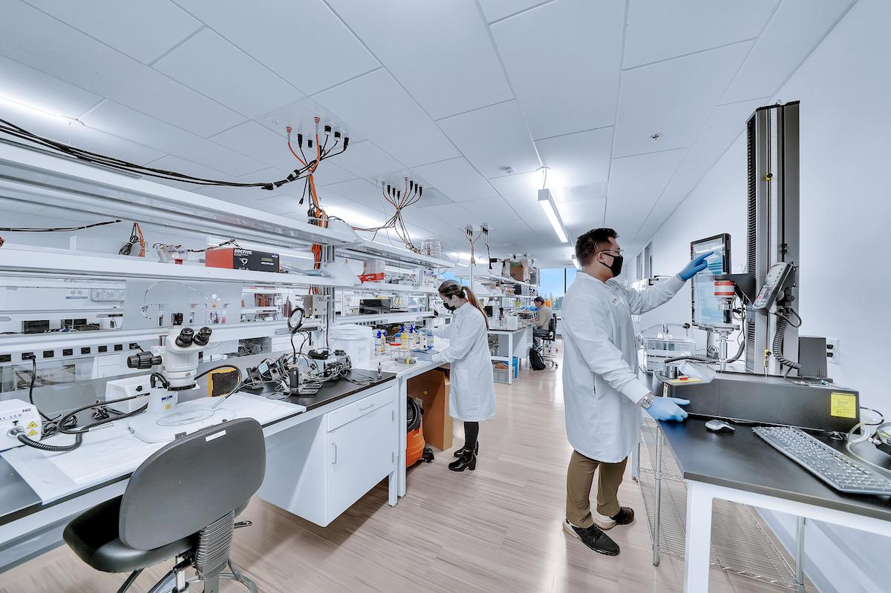

Introduction to Biotechnology
Biotechnology is a fascinating field that combines biology, chemistry, and technology to solve real-world problems. As a Genetics and Biotechnology student, I'm passionate about its potential to revolutionize various industries.
Applications of Biotechnology
Biotechnology has numerous applications across different sectors:
- Healthcare
- Gene therapy
- Personalized medicine
- Vaccine development
- Agriculture
- Genetically modified crops
- Pest-resistant plants
- Improved crop yields
- Environmental conservation
- Bioremediation
- Sustainable biofuels
- Waste management
The Future of Biotechnology
The future of biotechnology is incredibly promising. Watch this video to learn more about emerging trends in the field: